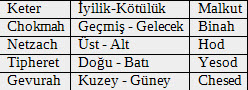
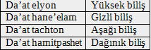

On Sefirot’un adlarına, Kutsal metinlerde dağınık olarak rastlanır. Bu konuda aşağıda birkaç örnek göreceksiniz.
Tabernakl’ın yapımı sırasında Tanrı’nın Betzalel ile konuşmasında, üç yüksek sefirot’a büyük anlama gücü verdiği yazılıdır.
Exodus 31:3 – “Ve onu, hikmette ve anlayışta ve bilgide ve işçilikle ilgili davranışta Tanrının ruhu ile doldurdum.”
Burada Chokmah- Hikmet ve Binah-Anlayış Sefirotu ile ve aynı zamanda “Tanrının Ruhu” ile doldurulduğunu görüyoruz. Da’at-Biliş ilişkisinden daha sonra söz edeceğiz.
Yedi alt Sephirot ile başka bir metinde karşılaşıyoruz:
1.Tarihler 29:11 – “(O LORD) Ey Efendi, büyüklük, ve güç (ceberut) ve görkem (ihtişam) ve zafer ve yücelik: cennette ve yeryüzünde bütün her şey senin içindir: senindir krallık, Ey Efendi ve başın her şeyden yücedir.”
Yukarıdaki ayette, büyüklük Chesed (Merhamet) ile ilgilidir ve “bütün” ise Yesod (Temel/Altyapı) ile ilgilidir.
İlk Sefirah Chokmah, ruhun herhangi bir konuyu tasarlayan yeteneğidir ve bu yüzden, nedir? sorusunun gizil gücü anlamına gelen, koach mah sözcüklerinden meydana gelmiştir. Orijinal düşünce üretir ve sık sık aklın ilk parlaması olarak anlamlandırılır. Baştan itibaren düşüncenin tüm ayrıntıları onun içinde barınır ama henüz sıkıştırılmış/konsantre ve örtük haldedir, her şeyin potansiyelidir. Bu potansiyel, her şeyi kapsayan ama hiçbir tanım ve gerçekleştirme vermeyen bir nokta işareti ile kıyaslanabilir. Tetragarammatonda, noktaya benzeyen ilk harfin, yud ile betimlendiğini anımsayalım.
İkinci Sefirah Binah’ın anlamı “anlayış” olup açılımı ise; “bir konudan başka bir konu üretmek veya anlamak”tır. Binah orijinal fikri alır, enine boyuna genişletir ve geliştirir. Chokmahda kapalı olan bir düşünce’nin detayları berraklaştırılır ve aydınlatılır. Konsantre haldeki biçim açığa çıkarılır ve anlaşılır. Tanrı isminde Binah, ikinci (h) harfidir. Onun biçimi, daha çok uzatılmış çizgiden oluşmaktadır, noktanın enine ve boyuna genişlemesini çağrıştırır. Chokmah ve Binah eşit iki yoldaştır ve asla ayrı olamazlar. Zohar onlardan “sarayın noktası” olarak söz eder; Chokmah’ın noktası ile Binah’ın sarayı gerçekleşir. Chokmah’ın koach mah’ı (“ne dir” in potansiyeli) Binah’ı gerçekleştirir.
Kabalistik literatürde bunlar “küçük yüzler” olarak da adlandırılırken, Tetragrammatonda, yud Hohmah’ı, Hey Binah’ı ve vov ise Zeir Anpin’i belirtir.
Bir fikir önce soyut olarak tasarlanır. Daat’ın anlamı şu ayetin ilişki ve birleşmesini gösterir, “ve Adem Havvayı (Daat sözcüğünden) bildi” [Tekvin/Yaratılış 4:1]. Daat’ın gücü, gerçeklikten soyut kavramı getirir. Bir fikir duyumsanmış ve tamamlanmıştır, dolayısı ile Daat intelekt ve duyguların birleşiminin gücüne sahiptir. Daat, Hohmah ve Binah arasında bağlayıcı görevi yapar ve bedenin (Sefirot) desteğidir. Daat’ı İnsan bedenine uygularsak, bedenin desteği olan ve gövdeyi beyine bağlayan spiral bir sap gibi, ChaBad’ın sağ yarım küre, sol yarım küre ve beyincikdeki üç kavrama yeteneğine karşılık gelir.
İzleyen diğer üç Sefirot Duygulara aittir. Bedende Chesed sağ kolla, Gevurah sol kol ve Tiferet kalp ile ilişkilidir. Kabalistler ataları Abraham, İshak ve Yakub ile üç üstün Sefirot olan Chesed, Gevurah ve Tiferet arasında paralellik kurarlar
Chesed’in (sevgi-sevecenlik) karakteri heryere dağılmış sınırsız yardımseverliktir. “Dünya Chesed ile kurulmuştur” dendiği gibi Yaratılış Chesed’in doğal özgün davranışıdır. Yaşam sınırsız sayıdaki dünyalara ve yaratılışlara ondan dağıldığı için, Chesed’in niteliği aynı zamanda “büyüklük” (Gedulah) olarak da adlandırılır. İyilik yapmak iyilikseverin doğasıdır söyleminde olduğu gibi, Abraham’dan çıkan sonsuz sevgi, sevecenliğin paradigması olarak gördüğümüz Chessedde somutlaşmıştır. Abraham’ın çadırının her tarafı açıktı ve onun sıcak konukseverliği her yere yayılmıştı.
Chesedin niteliği sınırsızlık ise, Gevurah’ın niteliği de engellemektir. O’nun doğal gücü ve yeteneği, sınırlamak ve küçültmektir. Yaratılış sürecinde, Gevurah, yaratılanların içinde bulunan va yaratılışı harekete geçiren gücü sınırlayarak, onların içlerindeki kaynaktan kopuk varlıklar olmak yerine, dokunulabilir bağımsız varlık olmalarını olanaklı kılar. Aksi halde beden boşlukta dağılır gider. Bu bağlamda, Ata İshak’ın yaşantısı ile Gevurah Sefirahı arasında tam bir paralellik vardır. (İshak’ın, iki oğlundan, eylem adamı ve sınır tanımaz Esav ile düşünce insanı Yakub arasındaki dengeyi kurmasını anımsayalım)
Gevurah aynı zamanda “yasa” ve “yargı” (Din) olarak da adlandırılır. Chesed’den çıktığı gibi sınırsız ve karşılısız bir şekilde değil de, alıcının hak ettiği kadar ve doğru oranda yargı dağıtması istenir. Yaratılışın düzenli olarak var olması için Chesed’in sınırsızlığının Gevurah tarafından sınırlanması gereklidir. İnsanlık açısından bakarsak, eğer Chesed yani sınırsızlık baskın durumda ise, sınırsız sevgi bütün adaletsizliği örteceği için yeryüzü günahkarlarla dolardı. Aksine eğer Gevurah baskın olursa, hiç kimse yargının katı ve kesin araştırmasına dayanamazdı.
Hem Chesed hem de Gevurah, arabulucu bir yeteneğe sahip olan Tiferet Sefirahının başarısı için çalışırlar. Tiferet Chesed ve Gevurah’ı uyumlu bir şekilde karıştırır ve bu da güzel bir sonuç verir. O güzel ve süslü bir kumaş elde etmek için, bir çok rengi karıştıran bir kumaş boyayıcısı ile karşılaştırılabilir. Tiferet, İnsan içinde de “sevecenlik” (Rachamim) yeteneğini dengeler.
Oysa Chesed, sevecenliği kimseyi ayırmadan, herkese eşit şekilde verir; Tiferet, sevecenlik verilecek uygun kişiyi arar ve ancak buna değen kişiye yardımseverlikle verir. Tiferet aynı şekilde Chesed ve Gevurah’ın anlaştığı bir akış sağladığında, oluşan denge ortamında “hakikat” (Emet) ortaya çıkar. Tiferet gövdede sağ ve sol arasında, yaratılıştaki uyuma aracılık eden merkez pozisyonundaki kalp’dir. Atalarda ise Tiferet, Abraham’ın büyük oğlu İshak’ın oğlu Yakub’da görünür. Chesed ve Gevurah’ın mükemmel dengesi olan Yakubdan meydana gelen çocukların hepsi de âdildirler.
Chesed’in içsel çevirisi sevgi, dışsal çevirisi ise şefkattir. Chesed’in içsel bakışı Tanrı sevgisidir ve en büyük isteği O’na bağlı olmaktır. Chesed’in dışsal özellikleri ise, kişinin isteklerini elde ederken Tanrının emirlerini daha iyi uygulayarak deneyimlemesi ve O’nun özelliklerine bağlı olmaktır.
Sonraki üç Sefirot Netzah, Hod ve Yesod’dur. Bu üçü Chesed, Gevurah ve Tiferet’in uzantılarıdır. Netzah Chesed’in uzantısı, Hod Gevurah’ın ve Yesod da Tiferetin.
Bu üç sefirotun İnsan bedeni ile paralellikleri ise; Netzah ve Hod iki bud’a ve Yesod ise üreme organı’na (Brit Kodesh) karşılık gelir. Tam olarak budlar bedeni destekler ve bedeni gideceği yere taşırken, aynı zamanda Netzah ve Hod üst Sefirota kanal olurlar. Kabalistler, Netzah ile Musayı, Hod ile Harun’u ve Yesod ile Yusuf’u kişiselliştiren paralellik kurarlar.
Netzah sözcüğü “fatih” veya “galip” anlamına gelen menatzeach sözcüğünden gelir. Bu yüzden Netzah üstünlük düşüncesini belirtir. Belirlenen sınırsız yolda, diğerlerini ezerken Chesed’in uzantısına saygılıdır. Hod ise Gevurahta olduğu gibi varlığın genişlemesinin tam karşıtıdır ve uyulması gereken nokta veya sınırların zorlamasını gösterir. Hod “şükran” veya “itaat” anlamına gelen Hodaah sözcüğünden gelir. Diğerleri üzerindeki toplam üstünlük Netzah bağlantısı ile, toplam itaat ise Hod bağlantısı iledir. Yesod sefirahı ise bu ikisini dengeler, iletişimi kolaylaştırır ve bu yüzden de dünyanın temelidir.
Netzah, Hod ve Yesod’un görevi (NeHiY kısaltması olarak bilinir) Chesed, Gevurah ve Tiferet üzerindedir, bu durum belki oğluna deneyimlerini aktaran baba’ya benzetilebilir. ChaGaT uyandırıldığında NeHiY’in fonksiyonu, alıcının nasıl alacağına dikkat etmektir. NeHiY’in üçlü fonksiyonu olduğu düşünülebilir. Eğer baba bilginin tümünü kendi zihninde beliren şekilde verecekse, oğlu bunu sindiremez. Baba daha çok, konuyu çocuğun anlayacağı şekilde basitleştirmeli ve azar azar vermelidir. Kabalistik terminolojide Netzah ve Hod’un işlevleri için bu duruma uyan, “böbrekler haber verir” ve sperm üreten “iki testis” örneği verilir. Bunun anlamı, güç algılanan bir kavramın babanın zihninde düzeltilerek, çocuğun kapasitesine uygun hale getirilmesidir
Netzah ve Hod aynı zamanda “öğütücü” ve “değirmen”’i de çağrıştırır. Değirmen buğdayı öğütür un haline getirir, baba da kavramları parçalar ve hangisini vereceğini, hangisini vermeyeceğini belirler. Netzah ve Hod, kavramları bütün boyutları ile küçültme hizmeti yaparlar. Sonuç olarak Netzah da baba gibi kendisinin üstünde egemen olmasını sağlayacak hiçbir yararlı etkiyi saklamaz veya oğlundan öğrenmesini sağlar
Bu benzerliği daha ileri taşıyarak Yesod Sefirahını da açıklayabiliriz. Baba özel olarak, bıkmadan tekrarlayarak ve aklını çocuğuna sevgiyle bağlayarak öğretecektir. Onun gerçek isteği oğlunun konuyu anlamasıdır. Babanın en büyük amacı ve zevki oğlunun öğrenmesidir. Çocuk, babası ile olan ilişkisinin kalitesine göre daha çok sindirebilir veya tersi. Baba ile oğlun bu birleştirici bağı Yesod’un niteliğidir. Yesod da önceki sefirota kanal olan huni işlevi görür.
Buradan, ChaGaT ve NeHiY üçlülerine neden çift dendiğini anlayabiliriz. ChaGaT alıcıyı dikkate almadan, onların içinde varolan duygulardır. NeHiY, ChaGaT’ın diğerleri tarafından alınan duygularını odaklayan güçlerdir. Bu yüzden ChaGaT ve NeHiy birbirlerine bağımlı olan çiftler olarak adlandırılır.
Sonuç olarak, Chessed sınırsız vermeyi, Gevurah buna benzer şekilde sınırsız dizginlemeyi ve Tiferet de bu ikisinin karışımının uyumlu olmasını belirtir.
Onuncu Sefirah Malkhut olarak adlandırılır. İlk Sefirah Hohmah’ın son gerçekleşmesidir. Hohmah, koach mah – ne’dir?’in potansiyeli ve Malkhut Mah’ın- hangi’dir?’in potansiyelidir. Malkhut Tetragrammatonda, son He, insan bedeninde ise ağız’dır. Kabalada Malkhut, Kral David olarak kişiselleştirilir. Malkhut, yüksek Sefirot’tan gelen etkiyi alan veya alıcıdır ve dişil niteliktedir. Kadının, erkekten aldığı ile çocuk doğurması gibi, Malkhut da Zeir Anpin’den alır ve yeni bir bağımsız varlık yaratır. Krallıkta kral “alıcı”, halkının egemenliğini alır ve karşılığında onların ihtiyaçlarını karşılar.
Son Sefirah Malkhut, kendisi hariç, diğer Sefirot’a hiçbir etki kullanmaz. Ay ile karşılaştırırsak, onun kendi ışığı olmadığı halde, yeni bir varlık gibi güneşin ışığını yansıtır. Zeir Anpin ve Malkhut birleşmesi’ne Kabalada Yichud Zun – Zeir Anpin ve Nukvah (Malkhut) kombinasyonu denir. Bu fiziksel birleşme yaşam verebildiği gibi, Yichud Zun vasıtası ile tümüyle süpernal yayılma etkisi de yapar.
Bu konular kral düzeyinden ayrı ve uzaktır ancak sonradan krallığın egemenliğini kabul ederler. Tzimtzum’un bütün amacı, dünyanın yaşam gücünü kapatmak ve gizlemektir bu yüzden bağımsız olarak belirlediğini, gerçekleştirir. Uzay ve zaman Malkhut sefirahı boyunca varolur. Uzay boyutu içinde biz Tanrı’yı (kral) “sonsuz yukarda ve sınırsız aşağıda” ve aynı şekilde dört yönde de sınırsız. olarak adlandırabiliriz. Zaman boyutunda da Tanrı hükümdardır, hükümdardı ve hükümdar olacak olarak, sonsuz varoluşu anlatabiliriz. Malkhut sefirahı, Or Ain Sof ile başlayan oluşumda yaratılışın içinde bulunmaktaydı ve adı Shekinah idi.
Malkhut, aynı zamanda Tanrı tarafından dünyayı açığa çıkaran sefirah olduğu için, “Tanrının ağzı” veya “Tanrının konuşması” olarak da adlandırılır.
Yukarıdaki on Sefirot sıralamasında Daat Sefirahını da anlattık. Kabalistik metinlerde çoğunlukla Daat yerine Keter Sefirahı sayılır. Keter sözcüğünün anlamı “Taç”dır ve başa konulan taç gibi diğer bütün sefirotun üzerinde yer alır. Kralın tacı onun halkından seçkinliğidir ve halkı bu yüzden ona boyun eğer. Bu egemenliğe ve onların bağlılığına uygun olarak halka “tacın kulları” adı verilir. Keter bütün Sefirotun üzerinde yer alan bir Sefirahtır ve “Kutsal irade”’ye (Ratzon) ve “Zevk”’e (Taanug) eşittir. Kutsal irade, Keter’in dışsal derecesidir ve Zevk ise içsel derecesidir. En yüksek, en büyük derecesi ise “İman/inanç” (Emunah) derecesidir.
İnsan modelinde, Keter’in karşılığı, İntelekt ve Duygular’dır, intelekt ve duygular bedendeki ruh güçleridir. İntelekt zihinde ve Duygular ise kalptedir ancak zihin ve zevk kişiyi yönlendirdiğinde herhangi bir organdan aşkındır. Keter’in içsel boyutu Kabalada Atik Yomin (“günlerin eskisi”) ve dışsal boyutu ise Arich Anpin (“uzun yüz”) olarak adlandırılır.
Seder Hishtalshlut’un herhangi bir aşamasında Keter, bir derece ile diğeri arasında arabulucu olarak hareket eder. Yüksek derecenin Malkhutu, izleyen bir alt derecenin Keter’idir. Örneğin, dört dünya hiyerarşisinde, Atzilut’un Malkhutu, Beriah’ın Keteridir.
Keter’in Atik Yomin’i yüksek derece ile, Arich Anpin’i ise aşağı derece ile sınırlandırılır.
Sefirot, dikine dört grup olarak da düzenlenir. Bunlardan her grup, dört cennetten biri ile ikişki kurar. Dört cennet, Tanrısal isteği taşıyan bir zincir gibi birbirlerine bağlanarak O’ndan uzaklaşırlar. Yukarıda anlatıldığı gibi, “dört dünya” olarak betimlenen bu dünyalar “oluşma”, “yaratılış”, “biçimlenme” ve “yapılma” dünyaları olarak adlandırılır.
Bu dört dünya Tevratta İşaya 43:7’de birlikte anılmaktadır, “Her biri benim adımla çağrılan; Görkemim için yarattığım, biçim verdiğim, evet yaptığım...”
Boyutların kavramı ile ilgili olarak, bu çalışmada en eski fikir olan beş boyut gerçeği benimsenmiştir. Bunlar yer’in üç (kuzey-güney, doğu-batı, aşağı-yukarı) ve zamanın bir (başlangıç-son) boyutu ayrıca ek olarak tinsel/ruhsal beşinci boyut iyilik-günah (veya temiz-pis) alanı vardır. Bu boyut doğrudan ruh ile ilgilidir.
On Sefirot, bu beş boyutun on yönetimine paraleldir. Bu beş karşıt çift, Ain Sof’un doğasında bulunan derinliği betimler. Aşağıdaki tablo bu durumu göstermektedir.

Tablo 18: Sefirot çifleri ve özellikleri
Keter ile Malkhut arasındaki ilişkide, diğer Sefirahlar gibi, Tanrının bir görünüşü olduğu için iyi olduğu, Malkhut’un kendisinin “kötü/günah” olmadığı, unutulmamalıdır. Malkhut Ain Sof’tan en uzak Sefirot olduğu basitçe söylenirse de aynı zamanda Tanrı ile ilişkide başlangıç noktasıdır.
Chokmah ve Binah üst Sefirotu başlangıç ve son’u (geçmiş ve geleceği) anlatır. Tanrının kendisinin Aleph ve Tav olduğu gibi. (İncilde Grekçe Alpha ve Omega)
Netzah ve Hod, Tanrının yönetimini yukardan aşağı getirmekle görevlidirler ve kehanetin kaynağıdırlar, bu nedenle üst ve alt arasında bağlantıyı sağlarlar.
Tiferet, Doğu ile ilişkilidir, bu özel olarak Kutsallar Kutsalının kapısıdır. Yesod cennetin “aşağı son”’u (“batı”ya doğru) sayılır.
Gevurah Yargı’dır, kuzeyden geldiği söylenir (ayrıca günah’ın çağrısı da ordan gelir). Diğeri Hesed (lütuf) güneyden gelir, Tanrının “sağ kolu”dur.
SEFİROT’UN ÖZELLİKLERİ VE DÜZENİ
Keter – “Taç”
Keter, on sefirotun ilkidir, deneyimin süperbilinç alanına karşılık gelir ve farkındalık aurasının kuşattığı bir “taç” imajıyla anlatılır. Keter, sefirot düzeninde orta eksenin üstünde görünür. İnsan tarafından düşünülebilecek ve iradenin kaynağı olan en üst sefirah’tır.
Zohar’da bildirilen: “O süpernal taç [keter elyon] krallığın (âlemin) tâcıdır [keter malkut]” O ilktir, keter’den Malkhut’a bağlanan ilâhi yayılmanın en yükseğidir.
Keter sözcüğünün sayısal değeri = 620 olup İsraile gönderilen Tanrı buyruklarının toplam sayısıdır. Tevratta yazılı olan 613 mitzvoth (öğüt) ile sözlü Tevrat’ın 7 mitzvoth’u birlikte toplam 620 olur.
On emrin Tevrat metni 620 harf olduğu için, 620 mitzvoth’un hepsi de on emirde içerilmektedir.
Kabalada, 620 emrin sırrı, keter’den (=620) çıkan “ışığın 620 sütûnu”, keter’in “tavan” ile Malkhut’un “tabanını” bağlama görevini görür.
Bu ışık sütunları, kutsanmış olan kutsal’ın (Malkhut) Krallar kralı (keter)’de tamamlanmasına adanmış olarak İsrail ruhunu kuşatır.
Keter sefirahı, iki partzufimle (“profil”) gelişir. Onun dış partzufu Arich Anpin (“uzun surat”) (Acılı/Hüzünlü çehre) olarak adlandırılır, ruhun istenç (irade) gücü olan süperbilinçle ilişkilidir. İç partzuf Atik yomin’e (Günlerin eskisi) gönderme yapar, ruhun lütuf gücü ile (ta’anug) ilişkilidir.
Atik Yomin’in Altındaki diğer yedi sefirot, Arich Anpin’in etkisindedir (böylece istenç ve lütuf etkisinde yönlendirilirler). Atik Yomin’in üstündeki üç sefirot Arich Anpin ile kuşatılmamıştır, hiçbirşeyle karışmamış, Tanrısallığın öz deneyiminden türeyen inancın (emunah) süperbilinçli lûtfu halindedir.
Bu yüzden Kabalada Zohar’a referans vererek keter’in üç Reishin’den (baş) söz edilir; irade gücü ile ilgili olarak, Reisha d’Arich (uzamış baş), lütuf gücü ile ilgili olarak Reisha d’Ayin (yokluk başı), inanç gücü ile ilgili olarak da Reisha d’lo Ityada (bilinemeyen baş).
Keter’in bu üç başı, İbranice Keter sözcüğünün üç anlamıyla ilişkilendirilir. “Taç” anlamına ek olarak, keter’in kök anlamı olan “beklemek” veya “sarmak-kuşatmak” olarak da kullanılır. Bizler, bu dünyanın farkındalığından mutlak saklı olan ve ancak öz tanrısallık katından bu dünyaya indiği zaman açığa çıkacak olan bilinçliliği yani saf inancı beklediğimiz için “Bilinemez baş” ile Keter’in “Beklemek” anlamı uygun düşer.
Tablo 19: Keter’in üç başı
“Taç”ın anlamı, ruhun Kutsal lûtfun kaynağı bağlamında, özellikle “yokluk başı” ile ilişkilendirilebilir. “Taç” sembolü, Tanrısal vahiy ruhuyla bilinçlenmenin ve bütünlenmenin sembolü olarak kabul edilebilir. Bilgelerin saygıyla anlattığı gibi “Tanrısal varlığın parlaklığından gelen lûtfu almak için başlarının üstündeki taçlarıyla erdemli bir şekilde beklerler”
“Uzamış baş” anlamı, süpernal geleceğin “kuşatma” sı ile ilişkilendirilebilir. Ruhun bilinç gücü, geleceğin gücü ile kuşatılmıştır. (hohmah’dan Malkhuta Kutsal yayılma). Açığa çıkarken emirlerle uyum içinde olmaları, emirleri aşmamaları konusunda düzenleyicilik görevini yapar.
Keter’in insan ile ilişkilendirilen görüntüsü, Adam Kadmon (Başlangıçta varolan adam) ve ağarmış (Bilge) saçlarla taçlanan baş, olarak anlatılır. Dört harfli (Tetragrammaton) Tanrı ad’ında, ilk harf olan “yod” harfine karşılık gelir ve Tanrı adlarından EHYEH ile ilişkilendirilir. Bu kürenin insan evrimindeki hedefi, bilinçliliği dengede tutmaktır. Mutlak soyluluk ve Ezelî Ether’dir (Başlangıçta var olan). Antik Kutsal, Sonsuz Doğu ve “O”, sembolleri ile de anılan Keter sefirah’ı, İradenin kaynağı olarak da bilinir ve Hermon dağı’nın (Suriye ile Lübnan arasında) çiğ’i ile sembolleştirilir. Birçok Kabalistik metinde de diğer imleme ve sembolleri ile; Ayin (yokluk), Hokhmah Penimit (iç akıl), Mahshavah Elohit (kutsal düşünce), Tanrının Ruhu, köklerin kökü, gizemli bilgelik, (ilksel) nokta, “beyaz baş”, antik, irade, Ehyeh Asher Ehyeh (BEN OLAN BEN) geçmektedir.
Hohmah - ”Bilgelik/Hikmet”
Hohmah, on sefırotun ikincisi, yaratılış sürecinde bilinçli aklın ilk gücüdür.
Hohmah, sefirot konfigürasyonunun düz ekseni üstünde ortaya çıkar ve Beyin’in sağ yarımküresi, tzelem Elokim ile ilişkilidir.
Hohmah, iki partzufimi kontrol eder: Bunlardan yüksek olanı Abba İlâ’ah (“yüksek baba”), altta olanı ise Yisrael Saba (“Yaşlı İsrail”) olarak adlandırılır. Bu iki partzufim’e birlikte Abba (“baba”) adı verilir.
Hohmah, ruh ve sezgi gücü ile ilişkilidir, ani bilinçlenmeyi sağlar. Abba ilâ’ah partzuf’u, süper bilinç krallığından doğan kendiliğindenliğin gücü ile işbirliği yapar. Oysa Yisrael Saba partzufu, bilinçlenmeye, sonradan ve doğrudan etki eder.
Hohmah’ın “bilgeliği” ayrıca gerçeğin derinliğine bakmak ve soyut kavramsal öz’e kadar altta yatan aksiyomatik hakikati soyma yeteneğine sahiptir. Hakikatın bu tohumları, işte o zaman, entelektüel analiz ve gelişme yolculuğunda binah’ın gücüne katılmayı hak ederler. Hohmah, Tanrı adlarından “Yah” adına karşılık gelirken, Başlangıç ve (Başlangıçta varolan) Ezelî nokta olarak bilinir. Kral Süleyman ile kişiselleştirilebilen Hohmah sefirahı, yer olarak Cennet’i, boyut olarak derinliği, zaman olarak geleceği ve imge olarak pınar’ı simgeler. Hohmah, Orada olan, Hiçliğin dışındaki oluş’dur, düşüncenin kaynağı ve tohum’dur, aynı zamanda açığa vurma olarak bilinir. İnsan bedeninde üçüncü göz bölgesi (Alnın ortası) ile ilişkilendirilen Hohmah, en derin dalınç hali’ne ulaşmayla ve misk kokusu ile ortaya çıkan Hikmetli ruhsal irade ve amacı betimler. Potansiyeli ise, amacın gelişmesi ve inisiyatif ile dünyada evrensel planı açıklamaktır. Birçok Kabalistik metinde, İlksel Torah (Yaratılıştan önce varolan Torah), Yesh me-ayin (yokluktan oluş) olarak da söz edilmektedir.
Binah “Anlayış”
Binah, on sefirotun üçüncüsüdür ve yaratılıştaki intelekt’in ikinci bilinç gücüdür.
Binah, sefirot konfigürasyonunda sol eksen üstünde belirir ve beynin sol yarımküresinde tzelem Elokim ile ilişkilidir.
Binah, tamamen açık biçimde, iki parzufim’i kontrol eder: yüksekteki İmma İlâ’ah (“yüksek anne”), aşağıdaki Tevunah (“kavrayış”)’tır. Bu iki partzufimden birlikte, İmma (“anne”) olarak söz edilir.
Binah, ruh ile hem tümevarım hem de tümdengelimde kavramsal analiz ve akıl yürütme gücü ile işbirliği yapar. İmma Ilâ’ah partzuf’u da hohmah’ın içindeki kavrayış ve kapsama gücü ile işbirliği yapar, oysa Tevunah, bir’in bilinçlilik düşüncesini tamamen özümser.
Binah’ın “anlayış”ı aynı zamanda idea’nın içindeki gerçeklik derecesini inceleme yeteneği’ni de içerir. “Dinle O İsrail...” [Tesniye 6:4] anlamı “Anla...” Ayetteki ilk harfler “Kulağınla dinleyerek kontrol et” demektir.
Binah başka bir özelliği ile öne çıkar, bu da, hem kendini ve hem de diğer kavramları açıklama ve aydınlatma yeteneğidir. Bu nedenle, Kabalada “geniş nehir” olarak sembolize edilir.
Binah sözcüğü “arasında” anlamına gelen bein kökünden türetilir. Fikirler arasındaki farklılık ve ayrılıklar, Binah’ın gücü ile anlaşılır. Binah, hohmah ve da’at arasındaki ikinci “beyin”dir.
Hohmah ve binah’ın birliği (Kabalada “yüksek birliktir”), “baba ve “anne” (beynin sağ ve sol yarımküreleri) süreklidir ve Zohar’da “asla ayrılmayan iki arkadaş” olarak anlatılır. Bu birlik dünyanın sürekli olarak yenilenmesi için gereklidir (kalbin yedi özelliği “anne” (binah) rahminden doğumla başlar ve yaratılışın yedi günü ile ilişkilidir)
Hasidutta, binah sefirahı, simchah (neşe) ruhsal durumu ile ilişkilendirilir.
Binah, Tanrının mükemmel düşüncesinin analitik bakışını imler. Tanrı katındaki en üstün dişil elementtir. Shekinah’ın annesi sembolüyle açıklanır. Bu nedenle, Binah ile ilgili sembollerin bir çoğu Shekinah’la özdeşleştirilir. Hochmah’tan tohumu alır, aşağıda kalan diğer 7 sefirahı tasarlar ve doğurur. İnsan bedeninde Alın ve Rahim olarak yer alan Binah, Aile (Kabilenin) Anası (Kadın reisi), Yakubun ilk karısı Leah olarak kişiselleştirilir. Tanrı adı telâffuzu YHVH ELOHİM, Tetragrammaton’un “He” harfi’dir. Saf anlayış bölgesi olan, Ruhsal aşk ve farkındalık duyguları veren Mür kokusu ile özdeşleşen Binah’ın potansiyeli: öz-kontrolu geliştirmek, sessizlik, sır saklama, kişisel olmayan anlayış ve objektif aşk’tır. Kabalist metinlerde, daha birçok farklı özelliklerle Binah sefirahından söz edilmektedir; Göklerdeki Anne, En üst Shekinah, Saray, Pişmanlık, Nehrin 7 kolundan biri, En üst kutlama (Jübile), İbrani Alfabesi, En üst Yargı (Adalet), Beersheba, Lübnan (Yahudi geleneğinde yukarı Kudüs), Kurtarma, Yeminler / Andlar, Teshuvah (pişmanlık), sebep, tapınak, özgürlük.
Da’at “Biliş”
Da’at, Yaratılıştaki intelekt’in üçüncü ve son bilinç gücüdür.
Da’at Genellikle, ancak keter olmadığında sefirot arasında sayılır. Bundan dolayı da da’at, bilinçlenme bölgesindeki keter’in (iç boyutunun) yansıması olarak temsil edilir. Yine bu yüzden sefirot konfigürasyonunun orta sütununda doğrudan keter’in altında ortaya çıkar ve beyincik (alt beyin), tzelem Elokim ile ilişkilidir.
Da’at, bellek ve konsantrasyon gücü ile ruha katılır. Bir’in güvenilir “farkındalık” (hakarah) ve “duyarlık” (hergesh) güçleri’nin ortaya çıkardığı anlamlılık potansiyeline sahip olup, Hokmah ve binahın güçleri bu düşüncelerden bilinçlilik üretir. ruhun kaynağındaki süperbilinç ile da’at bağlantısından bu duyarlığın kendisi ortaya çıkar.
Da’at genellikle iki düzeyde işler; yüksek düzey - ki bu da’at elyon (“yüksek biliş”) veya da’at hane’elam (“gizli biliş”) olarak adlandırılır - intelekt’in iki yüksek gücü olan hohmah ve binah arasındaki sürekli bağlantıya hizmet eder; alçak düzey ise da’at tachton (“alçak biliş”) veya da’at hamitpashet (“dağınık biliş”) olarak adlandırılır ve duygu bölgesi ile intelekt bağına hizmet eder. Bu yüzden bir’in, bilinçliliğin bütünleşmesi anlamına gelen hakikat ile bu hakikate uygun eylemi belirlemesini ve uygulamasının kusursuz olmasını sağlar.

Tablo 20: Da’t düzeyleri
Da’at’ın bu düzeyi için Torah’da, [Süleymanın meselleri 24:4]: “odalar da’at ile dolar.” denmiştir. Burada söz edilen “Odalar” kalbin odalarıdır (cheder sözcüğü “oda” anlamına gelmektedir ki ruhun üç temel duygulanımı olan chesed – din - rachmamim’in kısaltmasıdır). Can’ın bedeni doldurması gibi, da’at’ın iç bilinçliliği de odaları doldurur ve canlandırır.
Zohar’da da’at’ın bu düzeyi “altı’yı içeren anahtar” olarak geçer. Da’at’ın “anahtarı”, kalbin altı odasını da (Özellikler) açar ve onları yaşam gücü ile doldurur.
Hasidut’da, da’at sefirahının ruhsal durumu yichud (“birleşme”) olarak tanımlanır.
Chesed - Gedullah “Sevecenlik/Şefkat”
Chesed, sefirotu oluşturan on sefirah’ın dördüncüsü ve yaratılış özelliklerinden olan duygu’nın ilk sefirahıdır.
Chesed, sefirot konfigürasyonunda sol sütunda belirir, doğrudan doğruya chochkmah’ın altında yer alır ve “sağ kol” olan tzelem Elokim ile ilişkilidir.
Chesed, bütün yaratılışı kucaklayan ve iyiliğini sunan ruh ile işbirliği yapar. Chesed, ruh’un diğer gerçeklik ile bağ kurmaya zorlayan büyük gücünden esinlenir ancak işbirliği açık değil örtüktür bu yüzden bütün diğer duygulanım güçlerinin anlatımlarında, ruh’dan sonra gelir.
Chesed, Yaratılışın ilk “gün”üdür. Bütün yaratılanlarda var olan sevecenliğin iyilik ışığı onda yaratılmıştır. Torah’da ilk gün “birin günü” olarak adlandırılır (yom echad) [Genesis 1:5]. Bu gün’ün Kutsal bilincine göre, bütün yaradılış, yaratıcının “bir”liğinde aşkla sarmalanmıştır. Bu gün için şunlar söylenmiştir: “Tanrı “Gün[leri] kendi sevecenliğinden buyurdu” [Süleymanın meselleri 42:9]. Zohar’da yomam sözcüğü, “gün[ler]” tek bir sözcüktür: “bir gün diğer bütün günlere eşlik eder ve onlarla uyumludur”. Buradan ilk gün’ün sevecenlik günü olduğunu, “eşlik” ve ışıması ile yaratılışın diğer bütün günlerini aydınlattığını öğreniyoruz..
Hasidutta, Chesed sefirahının ruhsal durumu ahavah (aşk) ile benzeştirilir.
Chesed sefirahı, Sevgi, Derin Aşk, Şefkat, çok büyük mutluluk ve Acıma duyguları ile Bolluk, Başarı, Büyüklük ve Zerafet özelliklerini içinde barındırır. Tanrının sevgisi, merhameti ve lûtfu ile cömert ve Hayırsever (Eril) tarafını simgeler.
Chesed’in 72 köprüsü vardır. Adam Kadmon’un Sağ koludur. Torah’da Abraham’ı gösterir. Tanrı adlarından “El”e karşılık gelir ve En yüksek (Süprem) Tanrı’dır, “El “Elyon”dur. Chesed için Kabalistik metinlerde, En yüksekteki Sular, Tanrı içkisi, ödül ve canlanma olarak da söz edilmekte, Sedir kokusu ile ilişki kurulmaktadır.
Gevurah “Yargı/Güç/Kudret”
Gevurah, on sefirot’un beşincisi ve yaratılış sırasına göre, duygusal özelliklerin ikinci sefirahıdır. Gevurah, sefirot konfigürasyonunda sol sütûn üzerinde, doğrudan binah’ın altında belirir ve “sol kol” anlamına gelen tzelet Elokim ile ilişkilidir.
Gevurah, doğuştan varolan dürtüleri kötüye kullanma eğiliminde olan ve bu nedenle Tanrı’nın yargısını da hak etmeyen birini, iyilikle engelleyen ruh ile işbirliği yapar. Bu güç, Yaratılışa lâyık bir ölçüde ve değerdedir. Gevurah, Kabalada midat hadin (“yargının niteliği”) ile ilgilidir. Gevurah’ın kudreti bir’e karşı içten (kötü eğilimler) veya dıştan (düşmanca) davranışları engeller.
Chesed ve Gevurah, ruh’un dış dünya ile yakınlaşmasında, yaratılışın iç dengesinin kurulması için birlikte hareket ederler. Chesed’in “sağ kolu” diğerlerini yakına çekmeye çalışırken, gevurah’ın “sol kol”u istenilmemeye mahkûm olmuşları uzaklaştırma hakkını elinde tutar. Başlangıç ilişkisi, “sol elin uzaklaştırması” gerekenler için bile sonunda, tamamlayıcı ilke olan “sağ elin yakına çekmesi”ni uygular.
Sonuçta, gevurah’ın kudreti, chesed’in doğasında var olanı gerçekleştirmek için, bir’in gücü ve etkin bir aracı olur.
Musa’nın Sina dağında aldığı ahid tabletleri 6x6 avuç
ölçüsündeydi. Torah Musa ve İsrail’e “Gevurah’ın ağzından” verilmişti.” Bilgelerin dediğine göre, Tanrının kendisinden başkasının kullanamayacağı bu en değerli ad’ı anma onuru sadece gevurah’a verilmiştir. “İsrail’in Yüceliği olan Tanrı yalan söylemez, düşüncesini de değiştirmez. Çünkü O insan değil ki, düşüncesini değiştirsin.” [Samuel 1 15:29] âyetinde Tanrı’nın îma ettiği “israil’in netzah’ı” [yücelik] gibi ama yalnız netzah niteliği ile sınırlı değildir. Burada gevurah, Tanrı’nın öz gücünü yansıtan sonsuz ışık ve şiddetin, sıkıştırılmış ve yoğunlaşmış olarak Torah’ın (özellikle On Emir ahdinin kazındığı tabletlerin) son harflerinde olduğunu işaret eder.
Gevurah sefirah’ının ruhsal durum tanımlaması, Hasidutta yirah (korku) ile ilişkilendirilir.
Gevurah, Dünyadaki kusursuz ceza ve öfkenin korkunç güçlerini temsil eder. Evrenin üstündeki denetimi sürdürmek için böyle bir güce gereksinme vardır. Ancak bu güçler yıkıcı olmasına karşın, gerekli düzeni sağlar ve işlenen suçun tam karşılığı olan cezayı uygular. Aynı zamanda Şeytânî günahın tohumlarını da taşır. Diğer taraf (Sitra Ahra) ‘da konumlandırılır...
Gevurah sefirahı, Adam Kadmon’un (insan bedeninde) sol koluna, Tevratta İshak’a (İbrahimin oğlu) karşılık gelir. Tanrı Adlarından “ELOHİM”dir. Renk olarak Kırmızı’ya karşılık gelir. Kuzey yönüdür, Cennetsel mahkeme, yok eden büyük yangın ve Adâletin şaşmaz ayırıcı özelliğidir. Maden olarak Altın, yiyecek olarak, Ekmek-Tuz-Şarap-Et’i betimler. Hayvan olarak Yılan, Meteorolojik olarak, karanlık gece-bulut-sis ve Mekân olarak da Bronz Altar’a (Kurban kesme yeri) karşılık gelir. Gevurah sefirahı, aynı zamanda “Din” olarak da adlandırılır, başlıca anlamı Yargı olmakla birlikte aynı zamanda şiddet, sertlik, katılık ve Tanrı korkusu olarak da bilinir. Gevurah’ın potansiyeli: Gücü doğru kullanmak, öz-savunma, karşılama, baskı gücü, cesaret ve nedenselliktir. Birçok kabalistik metinde, Gevurah sefirahı, Savaşçı, atlet, serüvenci, savaş sanatçısı ve Adâlet özellikleri ile belirtilirken, Tütün ve Deri kokusu ile de ilişkilendirilir.
Tiferet “Güzellik”
Tiferet on sefirotun altıncı ve Yaratılış içindeki duygusal özelliklerin, üçüncü sefirah’ıdır.
Tiferet, sefirot konfigürasyonunda orta sütunda ve da’at’ın hemen altında (veya da’atı saymazsak keterin altında) yer alır.
Tiferet’in sevecenliği, chesed ve gevurah arasındaki çatışma eğilimini uzlaştırma gücü olarak ruh ile işbirliği yapar. Bu durum Kabalada midat harachamim (“merhamet niteliği”) olarak belirtilir. Tiferet’in güzelliği, içindeki duyguların ifadesi ve duygulandırıcı zerafetinin karışımı olarak ortaya çıkar.
Dolaylı olarak ifâde etmek gerekirse, Tanrı İsrail halkının gururunu kaldırdığı gibi Tiferet’in kaynağı da gururlanmayı kaldırma olarak anlaşılabilir. Tanrı’ya hizmet ve dua, tiferet’in kazandırdığı bilinçlilik ile gerçekleşir ve bu yüzden, inançlı insanda gurur, burun büyüklüğü olarak değil, saygı uyandıracak şekilde yeniden canlanır.
Tiferet sefirah’ının ruhsal durumu Hasidutta, rachamamim (merhamet) olarak tanımlanır.
Tiferet, şeref ve güzellik Sefirahıdır. Hochmah ve Binah’ın yavrusu olan Tiferet, Evrenin uyum içinde kalması için, ideal dengeyi ve gereken Adâleti simgeler. Üstündeki diğer bütün (9 Adet) güçleri birleştirir. Ezelî İnsan’ın (Adam Kadmon) bedeninde Omurgayı betimler. Torah’da Yakup (İsrael), Musa ve Adem’i işaret eder. Tanrı Adlarından LORD (Efendi) olarak anılır, Tetragrammaton’un “vav” harfidir. Rabbiler literatüründe, “Kutsal olan, Kutsanmış olan” olarak anılır.
Tiferet’in rengi yeşil ve pembe’dir. Genellikle Shekinah ile birleşmeye çalışan Damat veya Prens olarak sembolize edilir ki bu birleşmeden insan ruhu doğacaktır. Ben’in ham formu, Tora Tomarı, Bir bakış, süt ve bal, büyük kollu şamdan (Menorah), Altın Atlar, Acıma ve Gerçek Yargı da Kabalist kaynaklarda kullanılan diğer imgeleridir.
Tiferet’in Başlıca anlamı Güzellik olmakla birlikte, birçok farklı yazılı metinde aynı zamanda: Uyum, Rahamim (merhamet), Damat, Koca, Oğul, Kral, Baba, Mesih, Tabernacl (Tapınak), Kutsal Ağaç (Yaşam ağacı), cennet, “vav” harfi, Yaratıcı, dürüstlük, Güneş, “Kutsal Bir Kutsanmış”, HA-SHEM, YHVH, YHVH-ELOHİM, Büyük İsim, Biricik İsim, Ze’ir Anpin (Kısa çehre), Net Ayna, Açık mucize, lulov [sukkot bayramı], shofar [boynuz çalgı], Baş Tefilini, Yakup ile ilgili simge ve özelliklerle de ilişkilendirilmektedir.
Tiferet, Altın anlamına da gelir. Altın spiral boyunca makro ve mikro ile ilişkilidir.Yaşam Ağacının merkezidir. Kişiselleşmenin ve yukarı hareketin denge noktası’dır, koku özelliği olarak tütsü/buhur kokusu ile ilişkilendirilir.
Tiferet sefirahı, Ruhta olup inişte fiziksel başlangıcın ilk bölünmesidir, sıradan dünya ile ruhsallığın karşılaşma noktasında Dünyaya uyum ve sevecenlik getirmek görevi vardır
Netzah “Zafer”
Netzah on sefirot’un yedincisi ve Yaratılış’ın duygusal özelliğinin dördüncü sefirahıdır.
Netzah, chesed’in Yaratılış’a vermek istediği iyiliklerin gerçekleştirilmesi sırasında, ortaya çıkan engelleri alteden ruh ile işbirliği yapar. Netzah sözcüğü hem “zafer” ve hem de “sonsuzluğu” belirtir. Netzah’ın son zaferi, kendi ölümü üstünedir denebilir ancak buna son engeli chesed oluşturur.
Amalek Kralı Agag’ı öldürmeden önce, peygamber Samuel “ve İsrail’in [Tanrı] netzah’ı da aldatmaz ve pişman olmaz, O insan değil ki pişman olsun” [I.Samuel 15:29] demiştir. “Pişman olmak” fikir değiştirmek anlamına gelir. Netzah sefirahı her zaman sabit durur ve asla pişman olmaz. Netzah ölümlü değildir “insan değildir” ki ölümle karşılaştığında “pişman olup” ölümden korksun.
Bu sonuca göre, mesirut-nefesh’in
gücü, yaşamını Tanrı ve Torah için kurban etmeye hazırdır, saklı olan her Yahudi ruhu, en son ifadesini netzah sefirah’ında bulur.
Netzah aynı zamanda “yönetmek” veya “orkestra için bir müzik parçası yazmak” anlamına da gelir (bu sözcük, Davud’un birçok mezmurunun ilk sözcüğüdür). Bu bağlamda, sağ kol’un karşılığı olduğu için doğa’dan yararlanma bilincidir ayrıca süpernal bedenin “yere dokunduğu” ilk koludur.
Tiferet’in (kutsal damat) ve Malkhut’un (kutsal gelin)“aşağı birlik”inde duygu birliği (kalp) ve anlatım (ağız) vardır – “O [damat] netzah’tadır [netzah’ın bilinçliliği ile] ve diğeri [gelin] hod’dadır [hod’un bilinçliliği ile]. Netzah sefirahı’nın ruhsal durumu, Hasidutta bitachon (güven)’e karşılık gelir.
Bu sefirah, Dünyada Tanrının aktif zerafetini temsil eder. (Adam Kadmon) Bedende sağ bacak, Torah’da Musa, Tanrı Adı olarak “YHVH ZEVAOT” Evsahibi, Efendi “LORD”, Mabette sağdaki “JACHİN” sütunudur “Ve direkleri mâbedin eyvanında dikti; ve sağ direği dikti, ve onun adını Yakin (Pekiştirecek) koydu: ve sol direği dikti, ve adını Boaz (Kuvvet bunda) koydu” [I.Krallar 7:21].
Netzah sefirahı’nın başlıca anlamı, Zafer olmakla birlikte aynı zamanda sonsuzluk, sabır, kehânet, orkestrasyon, inisiyatif ve sebât özellikleri ile de anılır.
Hod “İhtişam”, “kabul etme”
Hod, on sefirotun sekizincisi ve Yaratılışın duygusal özelliklerinin de beşinci sefirahıdır.
Hod, sefirot konfigürasyonunda sol sütunda, gevurah’ın altında yer alır ve sol ayak tzelem Elokim ile ilişkilidir.
Hod, bir’in yaşam amacını gerçekleştirmesi yönünde, ruhun süreklilik gücü ile işbirliği yapar. Bunu, en derindeki içsel sorumluluğundan doğan kararlılık ve azim ile başarır. Bu durum, yüksek yaşam amacının kabul edilmesidir ve bu işte, görkem ve heybetin aurası ile bir’in esinlendiği kaynak ona hizmet eder. Bu bağlamda hod sözcüğü yan anlam olarak “kabul etme” (hodo’ah) ve “ihtişam/görkem” karşılığıdır. Işığın “yankılanması” gibi bir izlenim duygusu yaratır.
Hod’un hoda’ah tarafı aynı zamanda kendisinin minnettalık (sefirotik karşılığı chesed’dir) gücünü ortaya koyduğu gibi aynı zamanda “itiraf” (vidui) gücüdür.
İki sefirot, netzah ve hod “tek bedenin iki yarısı” ile ilgilidir. Kabalada sık sık bir sefirah sayılır ( bunlar, Tanrının Tzevakot adı ile temsil edilir). Bu yüzden netzah ve hod (sağ ve sol bacaklar) görevlerini – yürümek- ancak birlikte oldukları zaman gerçekleştirebildikleri için tek başına da iş gören, chesed ve gevurah (sol ve sağ kollar) kadar saygın değildirler.
Zohar’da Netzah ve hod sefirahlarından “adalet ölçüleri” olarak söz edilir. Netzah erdem iken hod itiraf’tır (“kabul etmek” veya “itiraf etmek”). Bedenin dengesinin genel durumundan sorumlu olan iki kalça gibidirler.
“Aşağı birlik” de, gelin hod’un bilinçliliğini paylaşır. O, dâmadı hazırlayarak kendisi ile birlikte Kutsal huzura getirmeyi deneyimlerken evliliğinin “üçüncü ortağı” olan Tanrıya, kalbinin derinliklerinden gelen minnettarlık ve şükranını dile getirir.
Hasidutta Hod sefirahı, temimut (içtenlik) ruhsal durumu olarak tanımlanır.
Hod, Tanrı yargısıyla Dünyaya indirilen alt kanalı temsil eder. Kehânetin gücü ile aynı zamandadır. Tora’da Hârun, Tanrı Adı olarak ELOHİM ZEVA’OT – Evsahibi Tanrı, Mabette sol sütun “BOAZ” [I.Krallar 7:21] tarafından temsil edilir.
Hod’un Başlıca anlamı Görkem olmakla birlikte, Kabalistik metinlerde, aynı zamanda: Haşmet, heybet, parlaklık, yankılanmak, kehânet, feragat, güven kaynağı, sadakat özellikleri ile de anılır.
Yesod “Temel”
Yesod, on sefirotun dokuzuncusu ve Yaratılışın duygusal özelliklerinden altıncı sefirahdır.
Yesod, sefirot konfigürasyonunda orta sütunda tiferet’in altında yer alır ve (erkekte) üreme organları (kadında rahim) olarak tzelem Elokim ile ilişkilidir.
Yesod, dış realite (Malkhut sefirahı) ile bağlantı ve haberleşme gücü olarak ruh ile işbirliği yapar. Yapının temeli (yesod), yeryüzü (Malkhut) ile birlikte “toprak”tır.
Yesod İnsan’ın üreme organı ile ilişkili olduğundan, gelecek kuşakların temelidir. Sonsuz oluşum bağlamında Üreme gücü, yaratılmış insan’ın sınırlılığının dikkat çeken özelliğidir. Her bireysel insan’ın yeri (o’ndan) gelen bütün kuşaklara oranla göreceli olarak “küçük”tür. Yesod, insanın “küçük organ”ı ile ilgilidir ancak “küçük büyüğü (sonsuzluk) içerir.” Yesod, insan çocuklarının gerçek oluşumu ve üremenin sonsuz potansiyeli arasında “küçük” ve “dar” köprüdür.
Bu nedenle, yesod sefirahı, Torah’da tzadik (erdemli) olarak tanımlanır, “tzadik dünyanın temelidir” derken, özellikle kuşakların kusursuz tzadik’ine gönderme yapılır. Tzadik’in tam bedeni, uzayda ve zamanda, sonlu ve limitlidir. Bu bağlamda Tanrı’nın sonsuz ışığı ve yaratıcı yaşamgücü bu oluşuma uygundur.
Tzadik, ruhsal plânda olduğu gibi fizik plânda da üremeyi sürdürür. Tevrattaki hakiki buluşlar ve yeni anlayışlar’ın sürekli akışında O, üremeyi bilinçlenmesinin iç gözünde deneyimler. O üreme yoluyla, onun kuşaklarının ruhu uyanarak Tanrıya ve Torah’a döner.
Yesod aynı zamanda (Tanrı’nın ilk Yahudi Abraham ile yaptığı) ahdin kutsal imzâsı olan brit ile de ilgilidir. Peygamberin dediğine göre, özellikle Yesod, hakîkat ve barış’ın kutsal özellikleri arasında bir ahiddir. Torah’da “ve hakîkati ve barışı sevin.” [Zekeriya 8:19] olarak yer alır. Sevginin kökü Abrahamın ruhu ile ilgilidir ve denmiştir ki: “Abraham, Benim dostumdur” [İşaya 41:8].
O’nun bütün sevecenliği (chesed) yesod’da yoğunlaşmak için (su gibi) aşağı akar. Torah’ın mutlak hakikati ve (mitzvot) âyetin barışı arasında, İsrailin sevgi ile iyi eylemleri yerine getirmeleri için ahid orada yapılmıştı.
Tam, “temel”, “başlangıç” anlamında iken, yesod “bedenin bitimi” olarak adlandırılır (beden için, tiferet üreme organı yesod’a kadar uzanır ve denmiştir ki “beden ve brit bir sayılır”). Yesodun doğasında “barış” ın özelliği olan – shalom –vardır.
Yesod sefirah’ının bütün duygu ve gücü, başlangıç ile bitiş arasında birlik oluşturma yeteneğine sahiptir. Bu konuda Sefer Yezirah’da “son başlangıcın içinde ve başlangıç da sonun içindedir” denmiştir.
Chesedden yesoda altı sefirot katılıp gelişerek Zeir Anpin partzuf’u biçimini oluşturur ve Zeir Anpin, yüksek partzufim Abba ve İmma’dan “baş” veya “beyin-gücü”nü alır (hohmah, binah ve da’at’ın üç yüksek sefirotu)
Yesod sefirahı’nın, ruhsal durumu, Hasidutta, e met (hakikat) ile ilişkili olarak tanımlanır.
Yesod, Tiferetin yaratıcı ve iyiliksever kuvvetlere karar vermek üzere Shekinah’a bağlanmaya çalıştığı kanaldır. Bu sefirah, yukarıda da belirttiğimiz gibi, erkek fallusunu ve Kutsal sünnet ahdini sembolize eder. Torada Yusuf, Tanrı Adı olarak “EL HAY” veya “ELOHİM HAYYİM”, Yaşayan Tanrı veya sonsuz yaşam’dır. “EL SHADDAİ” (her şeye kâdir olan Tanrı) olarak da anılır. “ADON” Hâkim olarak da kullanılır. Tetragrammaton’da “VAV” harfinin dip uç noktasıdır.
Yesod’un Kabalistik metinlerde geçen diğer sembol ve işaretleri: Yaşam Ağacı, Yaşam suyunun kaynağı, Dürüstlük, (Tanrı ile insan arasındaki) Kutsal sözleşme, Gökkuşağı, İşaret (imza, mühür), Emir, Anı, Kutsal Dağ (ZİON), Kurtarıcı (Erkek), Yemin, Aşağı Hesed.
Malkhut “Krallık”
Malkhut, on sefirotun ve Yaratılış içindeki duygusal özelliklerin sonuncusudur.
Malkhut, sefirot konfigürasyonunda orta sütunun dibinde yesod’un altında yer alır ve yaşam veren organ “taç”(erilde kalp, dişilde dudak) veya ağız, tzelem Elokim ile ilişkilidir.
Malkhut, ruh ile kendini ifade gücü olarak işbirliği yapar. Kabalada, ruhun kendini ifade etmesine olanak veren üç temel giysi (levushim) olarak tanımlanır: “düşünce” (Machshavah), içerde olanı dışarı çıkaran ruh ve “konuşma yetisi” (Ma’aseh) ile dıştan açığa çıkaran ruh.
Malkhut, kendini ifade etme’yi temsil ettiğinden sık sık “konuşma dünyası” olarak anılır. Ancak fonksiyonu sadece kendini dışarı açmak değil aynı zamanda gerçeğe rehber olmak ve etkilemektir. Bu nedenle, Malkhut’a literal anlamda, bir’in yetkisini deneyimlemesi ve “amiral gemisi” olarak da yer verilir.
Malkhut aynı zamanda, dış gerçeğin tanınmasına da aracı olur. Bir yöneticinin, yönettiği ülkede, hangi kuralların gerekli olduğunu duyarlılıkla deneyimlemesi gereklidir. Bu yüzden Malkhut, Yaratılış içindeki her etki aracının isteğini, kendini onun yerine koyarak ve bütün yetkisi ile Kutsal kaynaktan araştırır. Bir ülke de ancak o zaman güvenli olur.
Tevratta söylendiği gibi; “Tanrının kapısı budur, erdemliler girebilir” [Mezmurlar 118:20], Ruh Tanrısal derin düşünce halindeyken, sadece Malkhut kapısından ya da “penceresinden” yüksek sefirota yükselebilir ve olayları kavrayabilir. Anılan âyet, Tanrıya bağlılıkla hizmet edenler ondan karşılığını alır anlamına gelir ve burada bütün sorumluluk “cennet krallığına bağlılıktır”.
Malkhut sefirahı, Nukva d’Zeir Anpin partzuf’unun biçimini de geliştirir. Başlangıçta tek nokta iken, her bir yüksek sefirot’u (Malkhut’un chochmaı, hohmah’ın Malkhutu olur v.s.) içinde barındıran Malkhut’un bireysel düzeyinden, 9 yüksek sefirotun tümünün biçimini alır.
Malkhut sefirahının ruhsal durumu, Hasidutta shiflut “alçakgönüllülük” ile ilişkilidir.
Malkhut sefirahı Ezelî Adamda ağız olarak da görülür. Torah’da Kral Davut ve kadın olarak da Rachel kimliği ile yer alır. Malkhut sefirahı Tanrı Adı olarak “Adonai” Efendi’ye karşılık gelirken, Tetragrammaton’un sonuncu “He”sidir, aynı zamanda, sol taraftan daha çok etkilenen “ELOHİM” olarak bilinir.
Kabalistik terminolojide, Malkhut sefirahı ile ilgili olarak kullanılan diğer sembol ve imler: Havuz, Deniz, Pınar başı, “Beersheba” (Yedinin en iyisi), yerküre, verimsiz toprak, toprağın altındaki asıl kaya, güneş ışığını pasif olarak yansıtan Ay, Kral Davut’un evindeki Kraliçe, Gelin, Kız evlat, Prenses, Erotik ve Romantik şarkılardaki erkeğine hasret kalan kadın, kehanetle ilgili görüntüler, dişi element, Moriah dağındaki toplantı çadırı, Tapınak, İsrail vatanı, Ayna, Gül, Şeref Tahtı, Adalet, Cennet bahçesi, Bilme ağacı, Fakir biri, Elma ağacı, Sözel Tora, Kutsama, Özgürlük, Sebt günü, ücretli izin dönemi, Jübile, Düşüncenin sonu, Herşey, Kartal
Malkhut’un başlıca anlamı Krallık olmasına karşın, birçok Kabala metninde aynı zamanda: Atarah (başbandı), Saygınlık, Alt Taç, adalet özelliği, İsrail topluluğu, Tanrı oturumu, aşağı Anne, “O Kutsallığın Ruhu”, küçük “hai”, Net-olmayan Ayna, Gizli Mucize, etrog [Sukkot’ta]
, yeryüzü, El Tefilini, alçakgönüllülük, anlamları ile de anılmaktadır.
Shekhinah, Malkhut
Shekinah Malkhut, Tanrının bulunduğu Krallık, (Talmudik anlayışa göre, yaratılan dünya olup aynı zamanda, heryerde hâzır ve nâzır olan Tanrının da evidir) Keneset İsraille, (Shekinah) İsrail halkının kişilikleri ve ruhlarını bir araya getirdi. Rabbiler geleneğine göre; Yahudiler, Shekinahtan aldıkları pay oranına göre sürgüne gönderildiler. Bu nedenle, geleneksel Yahudi kurtarıcı Mesih eskatolojisine
göre, insanın Tanrı ile barışması için, içindeki kendisi ile, ayrılmaz bir şekilde yeniden birleşmelidir. İnsan bu kutsal deneyi Shekinah aracılığı ile yaşayacaktır. Shekinah’ın en yüksek Sefirottan aldığı güçten dolayı pasifliği, eylemsizliği (Kadın tarafı ile eşitlendiği için) sık sık vurgulanmıştır. Diğer 9 sefirot ile birlikte çizilen resimlerde, Shekinah bir erkeğe aşık olan gelin veya prenses şeklinde temsil edilmiştir ki yanındaki damat veya prens de Tiferettir.